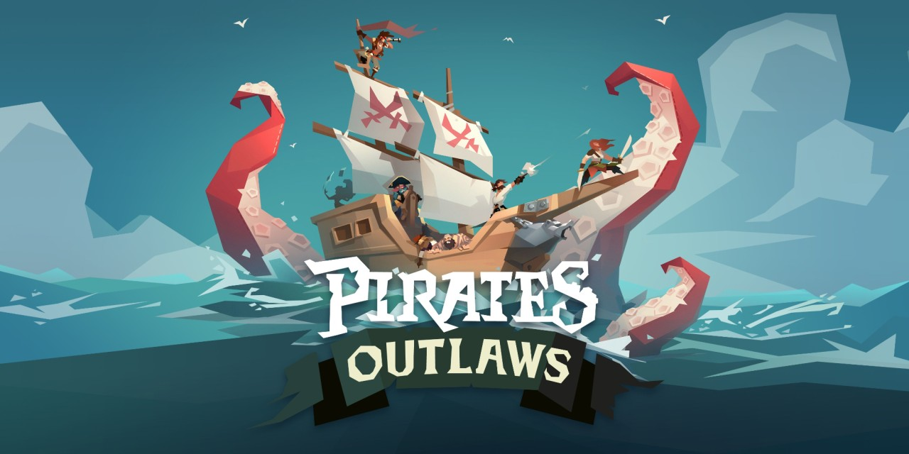
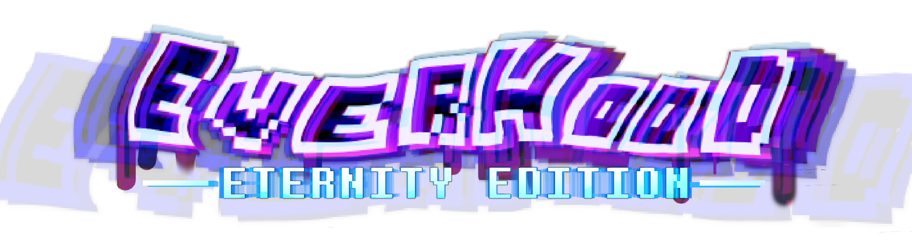
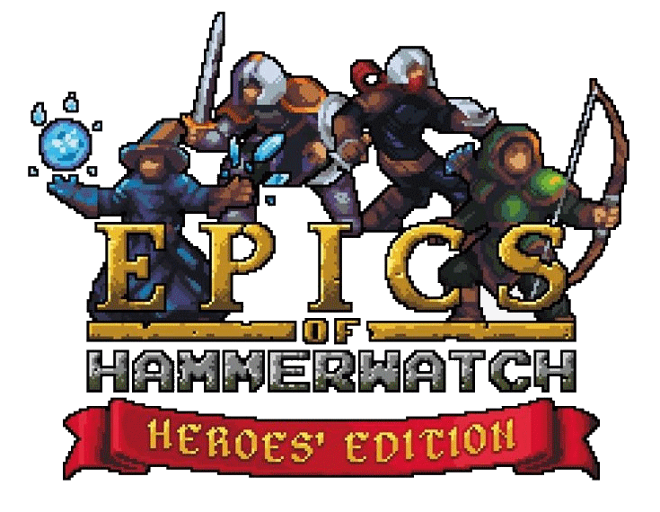

|
IGNACIO ORY - GAME DEVELOPER
|
Lead Programmer, Infinigon Games(2023 - Present)
Projects under NDA
This role not only includes leading the Programming Team (dividing tasks, checking on my coworkers, their progress and struggles), but also building it from scratch (looking for Programmers, creating a workflow, documentation, etc...). In the proper programming side (with Unity), it is focused on systems implementation (including Input, Savedata and Memory Management) and porting the different projects to Nintendo Switch, PlayStation 4, PlayStation 5, Xbox One, Xbox Series using the official Development Kits and SDKs, as well as Profiling, assessing and optimizing performance when needed.
This responsibility also includes being the person responsible for discussing with the Producers when planning the tasks to be done for the different milestones and making and managing builds to be sent to Clients.
- Project #0 (Under NDA)
- Unity 2021 | C#
- PC - Standalone, PC - Steam, Nintendo Switch, PlayStation 4, PlayStation 5, PC - Windows Store, Xbox One and Xbox Series (GDK)
- Multiplayer Party Game based on minigames with sport themes, based on licensed TV Series
- Systems implementation: Memory and performance management, Resource loading (using Addressables), Savedata, Input and Controller Management, VO Dubbing implementation
- Console Integration: Savesystem, Achievements and Trophies and Activities, User Management, Size Compression (for Nintendo Switch)
- Communication with Production and QA, deadline and contents agreements
Unity Console Programmer, BlitWorks Publishing(2021 - 2023)
Porting different projects to Nintendo Switch, PlayStation 4, PlayStation 5, Xbox One and Xbox Series using the official Development Kits and SDKs, including Profiling, assessing and optimizing performance. Apart from working in small teams (as well as mentoring newer members) or solo in some projects, this also includes working with an inhouse QA team.

- Pirates Outlaws
- Unity | C#
- Nintendo Switch, PlayStation 4, Xbox One (XDK)
- Roguelite card base game, originally from Mobile
- Gamepad based control scheme design and Implementation
- UI adaptation
- Console Integration: Savesystem (Nintendo Switch, Xbox One and PlayStation 4), Achievements (Xbox One) and Trophies (PlayStation 4), User Management (Xbox One)
- Communication with Fabled Game Studio (client) regarding features and needed adaptations
- Project was delayed and eventually rebooted to add more content, point at which I mentored a new programmer into the project and porting skill
- Project #1 (Under NDA)
- Unity 2019, 2020 and 2022 | C#
- Nintendo Switch, PlayStation 4, PlayStation 5, Xbox One and Xbox Series (XDK/GDK)
- Hardcore Tycoon game, originally from PC (similar to Rollercoaster Tycoon)
- Gamepad based control scheme design and Implementation
- Console Integration: Savesystem, Achievements and Trophies, User Management
- DLC and Mods (User Generated Content) Integration
- Performance optimization (C++ Plugins development), Profiling and fixing different Memory Leaks
- Communication with client regarding features and needed adaptations, as well as Nintendo for performance optimization

- Everhood: Eternity Edition
- Unity 2019 | C#
- PlayStation 4, PlayStation 5, Xbox One and Xbox Series (GDK)
- Narrative Rythm game, originally from PC
- Gamepad adaptations for PlayStation's 5 Dual Sense exclusive features
- Console Integration: Savesystem, Achievements and Trophies and Activities, User Management, Online Leaderboards
- Mod (User Generated Content) Integration
- Shader programming for Consoles

- Epics of Hammerwatch
- SDL2 | C++
- PlayStation 4, PlayStation 5
- Physical Release management of a compilation of different games: Hammerwatch + Heroes of Hammerwatch: Ultimate Edition
- Usage of Sony's offical Tools to generate all the packages and materials needed
- TRCs check (and passed)
- Project #4 (Under NDA)
- GameMaker | GML
- Nintendo Switch, PlayStation 4, PlayStation 5, Xbox One, Xbox Series
- Cooperative multiplayer beat' em up, originally from PC
- Performance assesment and optimization
- Project #5 (Under NDA)
- Unity 2021 | C#
- Nintendo Switch, PlayStation 4, PlayStation 5, Xbox One, Xbox Series
- Life simulator with minigames, originally from Mobile
- Performance assesment and optimization
- UI and Control Scheme adaptation
- Project #6 (Under NDA)
- Unity 2022 | C#
- Nintendo Switch, PlayStation 4, PlayStation 5, Xbox One, Xbox Series
- Roguelite with turn based combats, originally from PC
- Performance assesment and optimization
- UI and Control Scheme adaptation
- Console Services: Savesystem
Indie Game Developer (2018 - Present)
Game Projects:
Technical Skills
Programming Languages | C#, C++, Java, GDScript, JavaScript, C, Python
|
Game Engines and Libraries | Unity3D, SDL, Ogre3D, Phaser, OpenGL, Godot, Twine, Construct
|
Other Tools | Nvidia PhysX, FMOD, Android Studio, Mirror for Unity, MongoDB, Blender
|
Version Control Systems | Git, Perforce, Plastic, SVN
|
Education
Degree in Videogame Development, Universidad Complutense de Madrid, (September 2017 - June 2021)
Secondary Education (Scientific Orientation), IES Príncipe Felipe (Madrid), (September 2015 - June 2017)
Languages
Spanish | Mother Tongue
|
English | C2 Level - Cambridge Certificate of Proficiency in English, 2020
|
German | B1 Level - Goethe Institut (Madrid), 2016
|
Chinese | B1 Level - HSK III, 2015
|